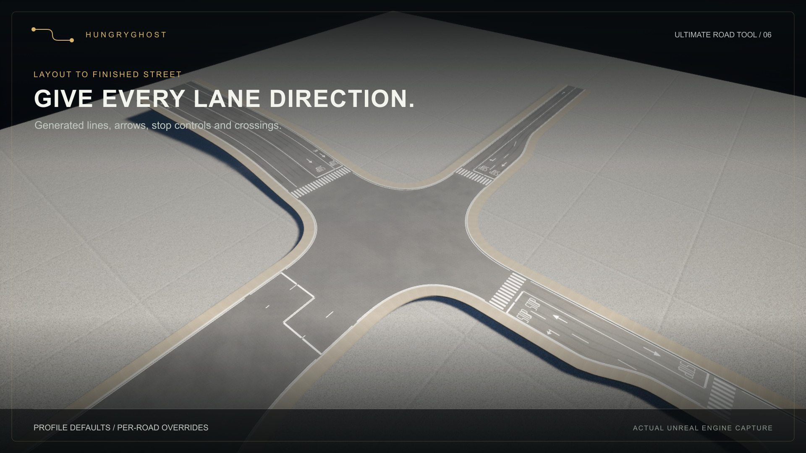
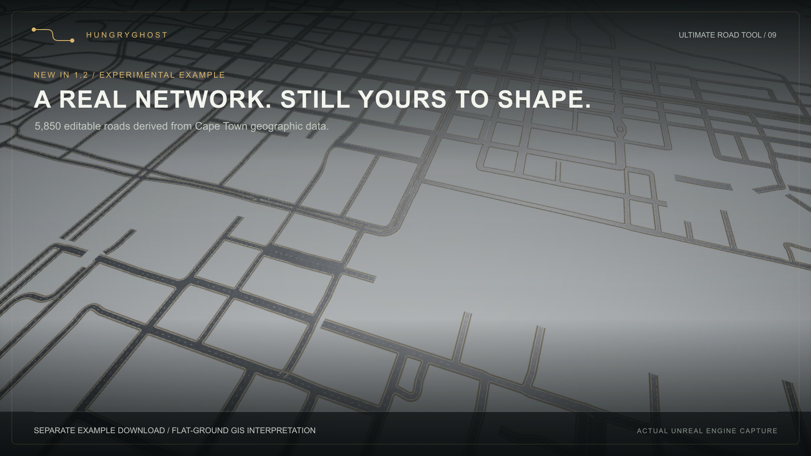

Getting started
Install and start
- Install through Fab, or copy StreetSystem into your project's Plugins directory for a source installation.
- Enable Ultimate Road Tool in Edit > Plugins and restart. Geometry Scripting and ZoneGraph are required engine plugins, declared in the descriptor.
- Enable Show Plugin Content in the Content Browser. Open
/StreetSystem/Maps/L_StreetSystem_SurfaceShowcasefor surfaced examples or/StreetSystem/Maps/L_StreetSystem_Examplesfor basic widths and grades. - Open Road Editor from the mode selector, or run
Street.Editorin Unreal's console. Tab switches between the full panel and compact bottom toolbar. - Choose a profile, press N, and click start and end positions. Press E, choose a road anchor, then keep clicking to extend. Esc finishes; Ctrl+Z undoes one section. Right mouse camera navigation retains Unreal's normal keys.
Windows C++ tools compatible with UE 5.8 are required for compiling source and packaging games, including Blueprint-only projects. No Blender installation, external service, paid asset or subscription is required to use the supplied Unreal content.
Controls
| Action | Key | Operation |
|---|---|---|
| Select | Q | Select roads; edit dots with the transform gizmo. |
| New road | N | Click two positions for a standalone road. |
| Extend | E | Choose an anchor once, then click successive destinations. |
| Join | C | Choose a source anchor and valid snapped destination. |
| Add node | I | Click the centerline to insert a shape-preserving node. |
| Snapping | S | Toggle snapping; set radius in the full panel. |
| Finish/cancel | Esc | Discard pending preview; retain placed sections. |
| Compact/full | Tab | Change view while preserving the active placement. |
The full panel exposes profiles, road width, independent sidewalk widths and wear. Widths are in meters; zero disables an individual sidewalk. Extensions inherit source profile and overrides. Snapping uses the target road elevation. Invalid previews explain angle, grade or junction-space constraints.
Outside Road Editor, selecting a road shows its dots. Hover the cyan centerline and click the green plus to insert a node. Alt-drag previews a branch; E is the recommended continuous extension workflow. Drag a free endpoint onto another road to move and join it. Branching into a road interior splits and retains its curve pieces. One Undo restores the operation.
Surfaces and customization
Five editable profiles are included: Urban, Residential, Industrial, Boulevard and Heritage. Each has original road, left/right curb and left/right sidewalk modules. Default asphalt uses ambientCG Asphalt 015. Sidewalks use Poly Haven Brushed Concrete 04 and Rock Embedded Tiles; Asphalt 02 is an optional cracked variant. Road-aligned mapping follows the spline. Generated junctions include sidewalk corners, underside and perimeter fascia.
Roads inherit profile wear. Disable Use Profile Defaults to override Grime, Edge Dirt and Tire Wear from 0 (clean) to 1. Junctions average road grime; directional tire wear and edge dirt remain on road arms. Wear updates primitive data without creating material instances or rebuilding geometry. Call the wear settings object's Apply() after changes made through code.
Original Blender/FBX sources are included under SourceAssets. Scans are CC0 with source credits and conversion records. Credits describe provenance and impose no additional product license.
Maps
- SurfaceShowcase: surfaced editable roads, curves and graded connections.
- Markings: editable lane layouts, stop streets, crossings, turn pockets and one-way examples.
- Examples: basic modules, widths and flat/graded junction fixtures.
- City_Editable_v002: 1,200 editable roads and 625 junctions across roughly 3.8 km. This stress example has approximately 20,000 components. Start with a smaller map on constrained hardware. It is not a baked or streaming solution.
Scope and limits
Supported: UE 5.8, Windows editor and Win64 games. Other engine versions and platforms are unvalidated. Network replication is not implemented. Modules: StreetSystemRuntime (Runtime), StreetSystemEditor (Editor). Interactive authoring is editor-only.
Connections support open roads at unit scale, up to 1,024 spline points and 2–8 junction arms. Branches need 20 degrees between arms, at most 30 percent grade, at most 50 m setback, and 2 m retained approach beyond a junction. Extend draws a straight connector. Bound endpoint reconnection, closed loops, automatic curved slip roads and unrestricted interchange footprints are unsupported.
Slab undersides do not generate bridge beams or supports. ZoneGraph guides are an integration starting point. Mass crowds, vehicle simulation, signal phases, pedestrian queues, physical traffic-sign placement and arbitrary decal painting are not implemented. Lane layouts and painted arrows do not automatically configure traffic routing. Baked road LODs, World Partition integration and unlimited city performance are not claimed.
Lanes, markings and turn pockets
Roads generate paint from profile settings, with per-road overrides in the Road Editor. Choose lane counts Along spline and Against spline, then Apply lane counts & road width. Either direction can have zero lanes for a one-way road; each direction supports up to 12. This replaces the lane list and sets the carriageway width. Customize individual lane use, arrows and separators afterwards.
Configure stop lines, STOP lettering and zebra crossings independently at each approach. Paint uses shared white/yellow materials on a combined road mesh, so it follows the road surface and does not project onto nearby objects. Two-road connectors continue matching lane and edge markings; extra lane separators end within unequal-width transitions.
Enable Left turn or Right turn under the start/end approach to add physical turn pockets. Width, storage and taper are in metres. Left/right follows arriving traffic. Curbs, sidewalks and paint follow the widening. Short approaches shorten pockets automatically and omit symbols that cannot fit. Roads shorter than 16 m do not generate pockets. These are widened approach lanes; separate bypass roads and traffic islands are not generated.
See Markings guide for settings and limitations. Road paint is visual authoring; national road-standard compliance and traffic simulation are not implied.
See EditorMode guide for authoring and wear, and SurfaceKits guide for module dimensions, mapping and customization.
New in 1.2.0
Improved junction rebuild reuse, local edit restoration, road tiling and paint projection. The separate example project adds an experimental editable Cape Town network. See GISExample guide for installation, data attribution and known limits.
Road Editor and optional surface wear
2026-09-09. The first dedicated authoring mode replaces dependence on a held Alt key with explicit tools and click-to-place previews. Open Road Editor in the editor mode dropdown or use the toolbar road icon. The console command Street.Editor opens the same mode.
| Tool | Shortcut inside Road Editor | Workflow |
|---|---|---|
| Select | Q | Select a road and move its node dots with the translate gizmo. |
| New road | N | Choose a profile, click a start and an end to create a standalone road. Use Extend when starting from an existing road. |
| Extend | E | Pick a node or centerline once, then keep clicking to extend from each new endpoint. Nearby snap targets create connections in the same transaction; the chain can continue from that junction. |
| Connect | C | Click a free endpoint and then a valid snap target on another road. Unsnapped placement is rejected. |
| Add node | I | Click a centerline to insert a shape-preserving node. |
| Snapping | S | Toggle road snapping. The panel exposes its radius in centimeters. |
| Cancel | Esc | Cancel the current preview; a second Esc returns to Select. |
| Compact / full view | Tab | Switch between the full side panel and a floating toolbar at the bottom of the active viewport. The current preview and tool stay active. |
Right mouse camera navigation retains its normal keys. Outside Road Editor, Unreal retains its shortcuts. Ctrl+Z undoes placement. Changing tools, leaving the mode or undoing clears the pending preview. A source curve or transform change invalidates a pending placement.
Each click in an Extend chain is one independent Undo transaction. Esc finishes without removing already placed sections. An invalid destination keeps the current anchor so it can be corrected. Switching views preserves the anchor, destination, snapping and profile. The compact toolbar provides all five tools, snapping, placement feedback and Finish; Full panel restores the profile, dimensions and wear controls. The view preference is stored in the user's editor configuration, not the map. The overlay follows the active viewport and is removed when leaving Road Editor.
Cursor snapping resolves a hit road to its centreline at the target's elevation, including clicks away from the centreline. Hits on generated junctions resolve through their bound road mouths. Cross-level connections still need a valid grade (maximum 30 percent), at least 20 degrees between junction arms, and enough length beyond both corner setbacks. Extend creates a straight connector; a shallow motorway-style merge or a curved slip road is not an automatic connection type. Rejection feedback identifies the start/target or displays the required length/grade.
Generated junctions now include an underside and perimeter fascia. The bottom shares each kit's actual tilted lower mouth vertices and reuses the surface triangulation, with no extra actor, component or tick. Material slot 4 is the slab foundation and defaults to curb material. This closes elevated junctions for views from below; it does not generate bridge beams, supports or engineering structure.
The panel shows phase instructions, placement length and valid snap feedback. End height offset grades a free placement relative to its anchor; snapping uses the target road elevation. New standalone roads use the chosen profile. Extensions inherit the source road's profile, dimensions, materials and wear settings. Width fields use meters and commit on Enter/focus loss; zero disables a sidewalk. Profile widths can be restored with one button.
Surface wear
Each road and profile owns an instanced UStreetSurfaceWearSettings object. Roads inherit their profile by default. Untick Use Profile Defaults to customize Grime, Edge Dirt and Tire Wear, independently from 0 to 1. Zero is clean. The five supplied profiles demonstrate different subtle wear amounts; Industrial has the strongest default. This supplements the scanned asphalt, without enabling the old rectangular repair/crack mask.
Grime uses irregular broad deposition. Edge dirt accumulates near curbs. Wheel wear follows lane positions across road-aligned UVs and fades near junction mouths. Junctions average connected road grime; directional tire tracks and curb-edge dirt currently remain on the road arms. These are material effects, not physical potholes, traffic simulation or placed skid decals.
Wear writes custom primitive data slots 5–8 (grime, dirt, tires, road length). Slots 0–4 retain their UV/width/seed contract. No per-road dynamic material instance, additional mesh, actor, tick or geometry rebuild is introduced for wear. The separate settings transaction object lets Undo update material data without rerunning actor construction. Profile edits intentionally visit their loaded users; individual road edits touch only their own components and registered junctions. Call Apply() after changing settings through runtime code/Blueprint.
Surface modules and materials
Profiles are in /StreetSystem/Profiles/DA_Road_<Style>. Assign a profile to a road and disable Override Dimensions to use its defaults. Enable dimension overrides to adjust the road and each sidewalk independently.
| Profile | Road width | Each sidewalk | Default walk |
|---|---|---|---|
| Urban | 7 m | 2.4 m | Brushed concrete |
| Residential | 5.5 m | 1.8 m | Brushed concrete |
| Industrial | 9 m | 2 m | Brushed concrete |
| Boulevard | 14 m | 4 m | Embedded tiles |
| Heritage | 5 m | 2 m | Embedded tiles |
All five use scanned asphalt. Dimensions are profile choices; the native source road is 700 cm wide. Modules extend along +X for 1,000 cm with Z up. Asphalt top is Z=0, bottom -12 cm. Curbs are 30 cm wide, native sidewalks 200 cm; top Z=15 and bottom Z=-20. Keep attachment profiles and pivots unchanged when customizing sources, then validate curved and graded joins. Use Blender FBX export and Unreal's Static Mesh reimport; generation scripts from the development repository are not required or included in this distribution.
Road modules contain 84 triangles; curb/sidewalk modules 128 each. Longitudinal rings are 100 cm apart. Sources are under SourceAssets/RealisticRoads, with a separate BasicRoad kit for the basic and city examples.
UV0 uses physical charts at a 200 cm period. U runs across, V along the road. UV1 classifies top/bottom (0), sides (-1) and caps (-2). Disable Generate Lightmap UVs on reimport: overwriting UV1 breaks exposed-face mapping. These movable modules do not use UV1 for baked lighting. Keep Allow CPU Access enabled for deformation.
Custom primitive data 0..2 supplies tile width, length and phase; 3..4 supplies road width/identity. Slots 5..8 carry grime, dirt, tire wear and road length. Preserve these slots in custom materials. Generated corner paving follows the curved curb; asphalt junction mapping is local planar projection.
Default scans use streamed 4K base color, normal and ORM maps. Base color is sRGB; normal and ORM are linear. OpenGL normals are imported with green flipped. ORM channels: neutral AO (R), supplied roughness (G), zero metal (B). Shared textures and primitive data avoid per-tile dynamic material instances. The 2 m asphalt repeat is an artistic choice, not a measured source scan span.
Grime, edge dirt and tire wear are controlled in Road Editor or the road's Surface Wear settings. Zero is clean. These are shading effects and do not create physical damage. For a cracked asphalt variation, duplicate a supplied asphalt material instance and assign the included PH_asphalt_02 textures from /StreetSystem/Art/PolyHaven/Textures.
CC0 scan sources: ambientCG Asphalt 015, Poly Haven Brushed Concrete 04, Rock Embedded Tiles, and Asphalt 02. Provenance records and original source maps are under SourceAssets/ThirdParty. The underlying scans are freely available; original module geometry and road tools are separate work.

Lane layouts and road paint
Roads now generate a separate, road-only paint mesh from their profile. The Road Editor's Lanes & Road Markings section has two-way, four-lane, one-way, cycle-lane and unmarked presets. With no road selected, it edits the current drawing profile and its loaded users. With a road selected, presets create an independent override. Disable Use Profile Defaults to customize individual lanes.
Lanes are ordered left to right looking along the spline. Width weights divide the carriageway width; they are not widths in metres. Each lane has a use (driving, bus, cycle or parking), direction, arrow and right-hand separator. Opposing directions use the shared centre-line style. Choose none, dashed, solid or double-solid lines, white or yellow centre paint, line width, dash length and gap. The driving-side setting controls subsequently applied presets; individually authored lane directions remain explicit.
Each end independently supports Auto, None, Stop or Yield and Auto, None or Zebra crossings. Crossing depth, stripe width, gap and setback are adjustable in centimetres. Auto adds stop approaches at junctions with at least three arms and crossings where the junction arm permits them. Two-arm continuations remain clear. Explicit controls also work on free ends. Short roads suppress approach details rather than drawing overlapping symbols. These are editable visual conventions, not a claim of compliance with any country's road standards.
Paint materials can be replaced independently of asphalt. The included warm-white and yellow masked materials expose roughness and colour, with road-coordinate wear driven by the road's Wear setting. Transparent chips reveal the underlying asphalt; there is no opaque backing and nothing is projected onto sidewalks or a different road below.
Geometry and editing costs
Each road owns one combined, non-colliding paint component with shared materials. Lane, stop, crossing and arrow edits rebuild that component only. Asphalt spline components, sidewalks, collision and the spatial network index are retained. Changes to the spline invalidate the local paint surface cache; junction updates refresh only their registered arms. Paint uses an acceleration tree over the actual deformed asphalt triangles, with a 3.5 mm vertical separation. It is not projected onto terrain or an idealized spline height.
Extension and split roads copy marking settings alongside the existing width and surface settings. The separate transactional marking object supports paint-only Undo. Shared profile changes intentionally visit all loaded inheriting roads.
Examples and scope
Open /StreetSystem/Maps/L_StreetSystem_Markings for editable lane layouts, raised approaches, turn pockets and one-way roads. Source project fixtures may be customized.
Use Along spline, Against spline and Apply lane counts & road width to size driving lanes. Either direction can be zero for a one-way road. Each direction supports up to 12 lanes. Configure individual uses and arrows after applying counts.
Turn pockets add physical width at incoming approaches. Enable Left turn or Right turn at Start or End, then adjust width, storage and taper in metres. Left/right follows approaching traffic. Short roads shorten pockets and suppress symbols without adequate room; roads below 16 metres do not generate pockets. These are approach widenings, not separate bypass roads. Lane changes on roads with pockets also rebuild their local geometry.
Custom lane definitions are not wired to ZoneGraph profiles, Mass traffic, vehicle routing or pedestrian waiting behavior. Physical stop signs and signals remain separate work.

Ultimate Road Tool 1.2.0 — experimental GIS example
The separate example download includes an editable Cape Town road network derived
from municipal road centerlines, alongside the four maps supplied in the plugin.
Install Ultimate Road Tool for UE 5.8 first, then open the example project.
The startup map is the smaller Markings showcase. Open
/Game/GIS/Maps/L_CapeTown_Release_v120 explicitly to explore the geographic city.
Every road is an ordinary editable StreetActor. Use Road Editor to select dots, reshape streets, change widths or sidewalks, and customize lane paint. Source IDs and street names remain in actor tags and the Outliner. The example is not baked.
What the example demonstrates
- A geographic network using the same authoring tools as manually drawn roads.
- Latest junction, circle, median and named-ramp corrections in the prepared data.
- Local road editing and cached junction rebuilds.
- Five supplied surface styles and independent road paint settings in the plugin.
Experimental scope
This is a flat-ground interpretation of 2D data, not a surveyed reconstruction. Road elevations, one-way rules, lane counts and sidewalks are provisional. Complex junctions and closely spaced carriageways can still overlap. Some sidewalk ends and traffic-circle connections need manual adjustment. It is not a finished city environment, a general GIS import UI, or automatic GeoScape terrain fitting. GeoScape and Ultimate Road Tool are separate products.
The whole geographic map loads at once. Expect several minutes of loading and substantial memory use; a 64 GB development machine was used for the city work. Smaller maps are the recommended starting point. World Partition streaming, baked network LODs and constant whole-city performance are not supplied. Local-edit measurements are not viewport FPS or minimum-hardware guarantees.
Traffic paint is visual authoring. Mass crowds, vehicle simulation, signal logic, pedestrian queues and bridge structures are not included.
Geographic data attribution
Road centerline data: City of Cape Town, Transport and Development Authority (TDA), Transport Management Centre, Goodwood. No City endorsement is implied.
Source layer: https://citymaps.capetown.gov.za/agsext/rest/services/Theme_Based/ODP_SPLIT_6/FeatureServer/8
Open Data terms: https://www.capetown.gov.za/General/Terms-of-use-open-data
Open Data Policy 27781, approved 3 December 2020: https://www.capetown.gov.za/_documents/resource.capetown.gov.za/documentcentre/Documents/Bylaws%20and%20policies/Open_Data_Policy.pdf
The policy defines open data as freely usable, shareable and adaptable for any purpose. The City supplies the data as-is without accuracy or fitness warranties. The municipal data is not claimed as Hungry Ghost's exclusive intellectual property. Our conversion changes coordinates, splits/fits curves, creates junctions and assigns provisional road profiles. The example retains the prepared data and its source provenance in Data/GIS. Source terms checked 11 September 2026.
Frequently asked questions
Can I edit every road in the city example?
Yes. Each street is an editable StreetActor, with spline points, widths, sidewalks and paint settings. The separate Cape Town example is experimental and may need manual junction cleanup; it is not a finished city environment.
Does it include traffic, pedestrians or working signals?
No. Road markings are visual authoring. ZoneGraph guides provide an integration starting point; vehicle simulation, Mass crowds, signal phases and pedestrian queues are not included.
Can I use one-way roads and more than two lanes?
Yes. Each direction supports zero to twelve lanes. Set Along spline and Against spline, apply the lane counts and width, then customize individual lane uses, arrows and separators.
Does it work automatically with GeoScape?
They are separate tools for complementary city workflows. This release does not include automatic GeoScape terrain fitting or a general GIS import interface.
What helps keep editing responsive?
Local edits refresh affected roads and junction arms. Paint-only edits retain asphalt and sidewalk geometry, and shared materials avoid per-tile material instances. Whole-city loading still has substantial memory and component costs; World Partition integration and baked road LODs are not supplied.
Do I need Blender or an external subscription?
No. The Unreal content is supplied. UE 5.8 on Windows is the validated editor target; Windows C++ tools are needed for source builds and packaging games. Other platforms have not been validated.